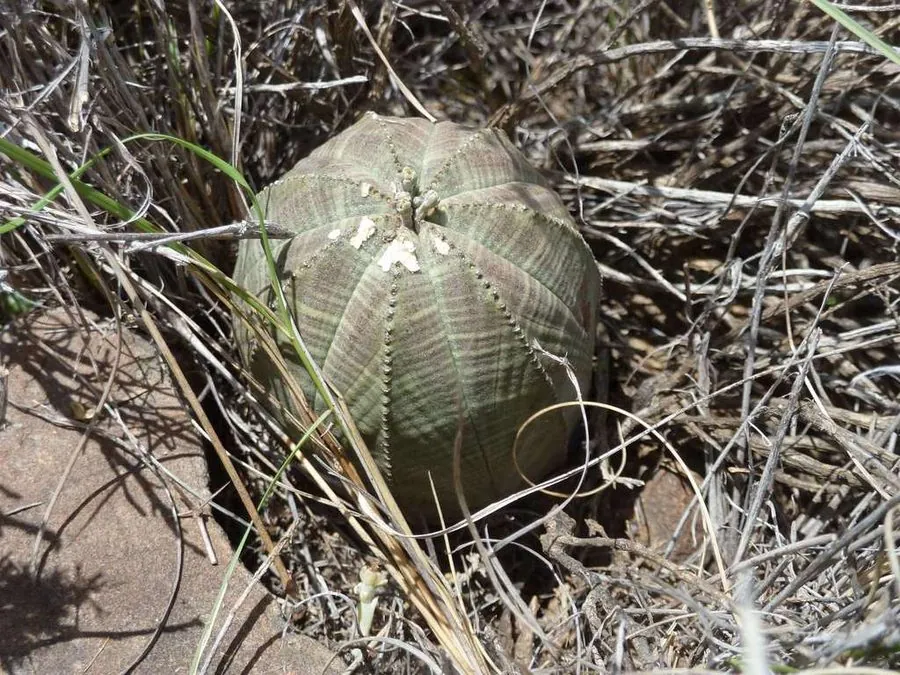

多肉植物 · 植物界
布纹球 Euphorbia obesa

大戟科大戟属多肉，球体灰绿色、表面有红褐色布纹，形似棒球，原产南非，是大戟科中造型独特的濒危多肉。
- 分类
- 门被子植物门纲木兰纲目金虎尾目科大戟科属大戟属
- 栖息环境
- 南非东开普省干旱地区的砾石坡与岩缝
- 地理分布
- 原产南非东开普省，世界各地盆栽观赏
- 保护级别
- IUCN 易危（VU）；CITES 附录Ⅱ
物种志
布纹球为大戟科大戟属的球状多肉植物，球体近球形，直径 8–12 厘米，高约 10 厘米，表皮灰绿色至蓝绿色，表面有红褐色或紫褐色的横向条纹，像布纹一样交错。球体具 8 条低矮的棱，棱上刺座退化，只有细小的痕迹。花小，黄绿色，生于球体顶部，花期夏季；果实为三棱状蒴果。
布纹球原产南非东开普省的干旱地区，喜阳光充足、温暖干燥和通风良好的环境，耐旱、怕积水和低温。它球体圆整、布纹独特，是大戟科中造型最奇特的种类之一，深受多肉爱好者喜爱。栽培用颗粒土，生长期干透浇透，冬季保持 10℃ 以上；繁殖以播种为主，也可嫁接。由于野生种群因采挖而减少，布纹球已被列入濒危野生动植物种国际贸易公约附录。
形态与习性
- 球径直径 8–12 厘米，高约 10 厘米
- 棱数8 条低棱，刺座退化
- 花期夏季，花小、黄绿色
- 光照喜充足阳光
- 水分耐旱，干透浇透
- 土壤排水良好的颗粒土
- 繁殖播种为主，也可嫁接
- 注意冬季需保持 10℃ 以上
趣味知识
- 布纹球表面的红褐色条纹像布纹，因此得名。
- 它没有明显的刺，靠球体上的花纹和棱线辨识。
- 野生布纹球因采挖而减少，已列入国际贸易公约附录。